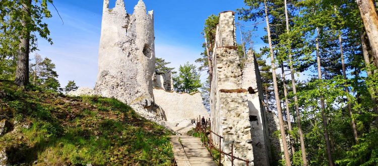
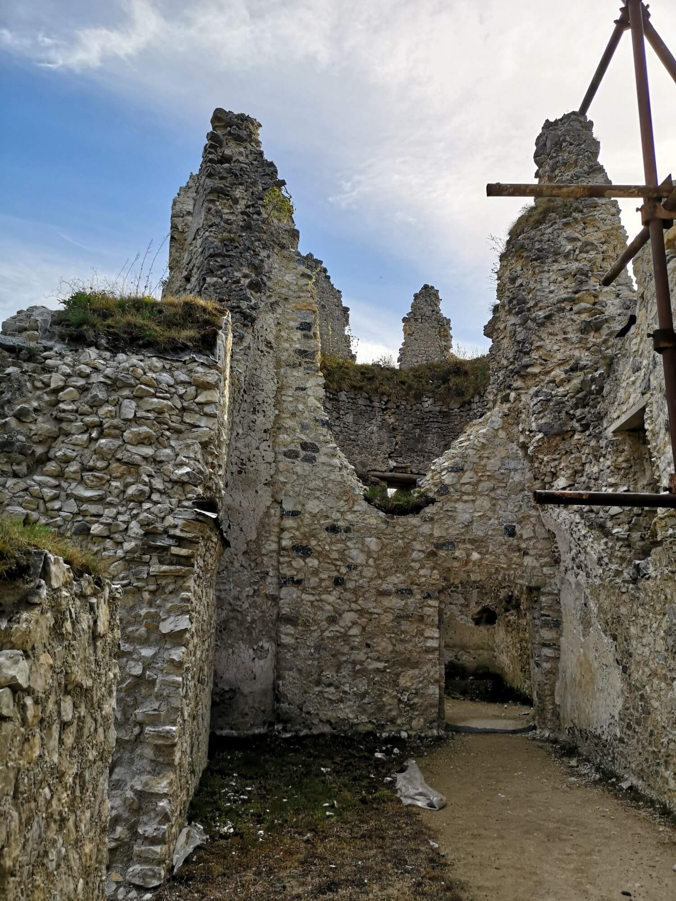

Nenáročná trasa
Vhodná pre kočík
Vhodná pre malé deti
Vhodná pre cyklistov
0,5 hodinový prístup





Hrad Blatnica je zrúcanina na strmom kopci Plešovice. Nachádza sa
neďaleko obce Blatnica a má dlhú históriu. Bol postavený v polovici
13. storočia a opustený bol v roku 1790 bol opustený a začal chátrať.
Dnes je to atrakcia ktorá láka turistov. Môžete sa tam dostať 2 rôznými
cestami pričom 2. cesta je vhodná aj pre kočík, male deti a cyklistov.
Cesta je nenáročná a výstup trvá maximálne 1 hodinu. Výhľady z hradu
na Turiec sú len bonusom k samotným zrúcaninám. Náročnosť je nízka. V
súčasnosti je hrad rekonštruovaný. 😄 😀 😁 😂 😆
Nenáročná trasa
Vhodná pre kočík
Vhodná pre malé deti
Vhodná pre cyklistov
0,5 hodinový prístup

